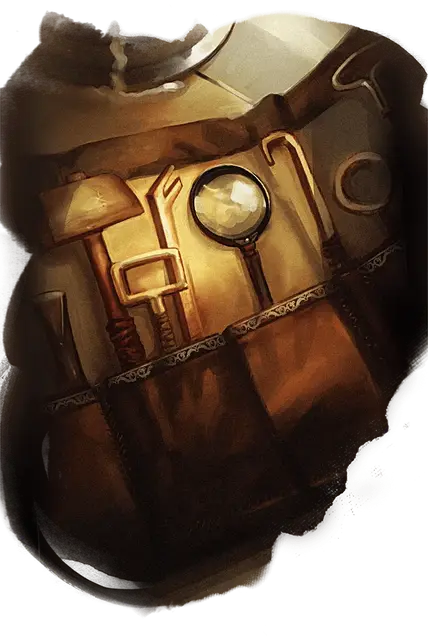

Мастер-вор
Master Thief
Средний Гуманоид (Любая раса), любое мировоззрение

Класс Доспеха 16 (клепанный кожаный доспех)
Хиты 84 (13к8 + 26)
Скорость 30 футов
| мод | спас | ||
|---|---|---|---|
| СИЛ | 11 | +0 | +0 |
| ЛОВ | 18 | +4 | +7 |
| ТЕЛ | 14 | +2 | +2 |
| мод | спас | ||
|---|---|---|---|
| ИНТ | 11 | +0 | +3 |
| МДР | 11 | +0 | +0 |
| ХАР | 12 | +1 | +1 |
Навыки Акробатика +7, Атлетика +3, Восприятие +3, Ловкость рук +7, Скрытность +7
Чувства пассивное Восприятие 13
Языки Воровской жаргон, один любой язык (обычно Общий)
Опасность 5 (1800 опыта)
Бонус мастерства +3
Среда обитания Город
Особенности
Хитрое действие. Каждый ход вор может бонусным действием совершить Рывок, Отход или Засаду.
Увёртливость. Если вор попадает под действие эффекта, который позволяет совершить спасбросок Ловкости, чтобы получить половину урона, вор не получает урона при успехе и половину урона при провале.
Скрытая атака (1/ход). Вор причиняет дополнительно 14 (4к6) урона, если попадает по цели атакой оружием, совершённой с преимуществом к броску атаки, или же если цель находится в пределах 5 футов от дееспособного союзника вора, и вор совершал бросок атаки без помехи.
Действия
Мультиатака. Вор совершает три атаки коротким мечом.
Короткий меч. . Рукопашная атака оружием: +7 к попаданию, досягаемость 5 футов, одна цель. Попадание: Колющий урон 7 (1к6 + 4).
Лёгкий арбалет. Дальнобойная атака оружием: +7 к попаданию, дистанция 80/320 футов, одна цель. Попадание: Колющий урон 8 (1к8 + 4).
Реакции
Невероятное уклонение. . Вор уменьшает вдвое урон от попавшей по нему атаки. Вор должен видеть нападавшего.
Описание
Мастера–воры известны тем, что совершили отчаянные грабежи. Они склонны создавать себе репутацию и культ личности. Мастер–вор может «уйти на покой» от практической работы, чтобы управлять гильдией воров, возглавить некоторое тайное предприятие, или жить спокойной и роскошной жизнью.